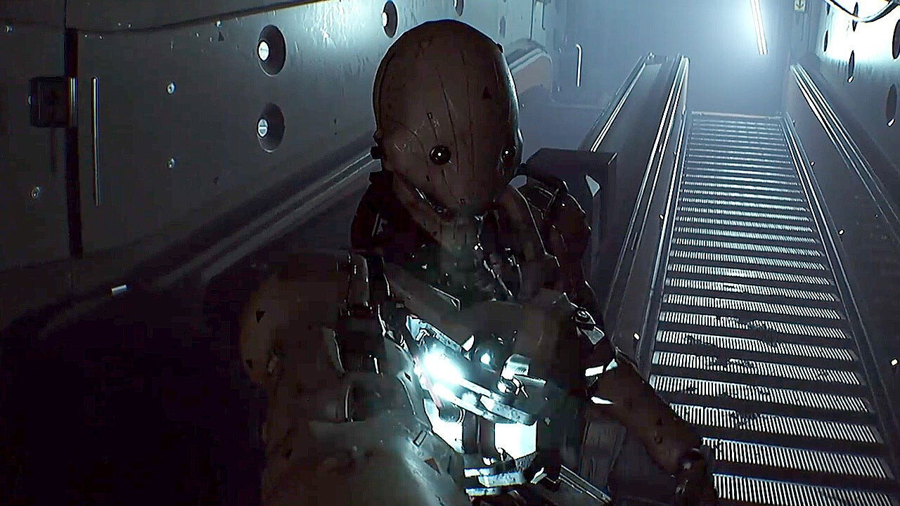
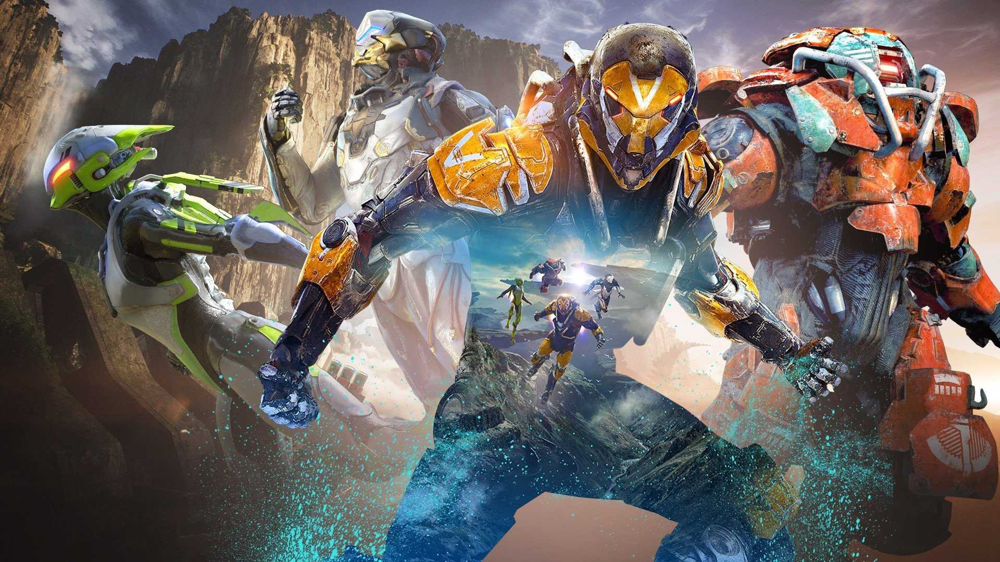
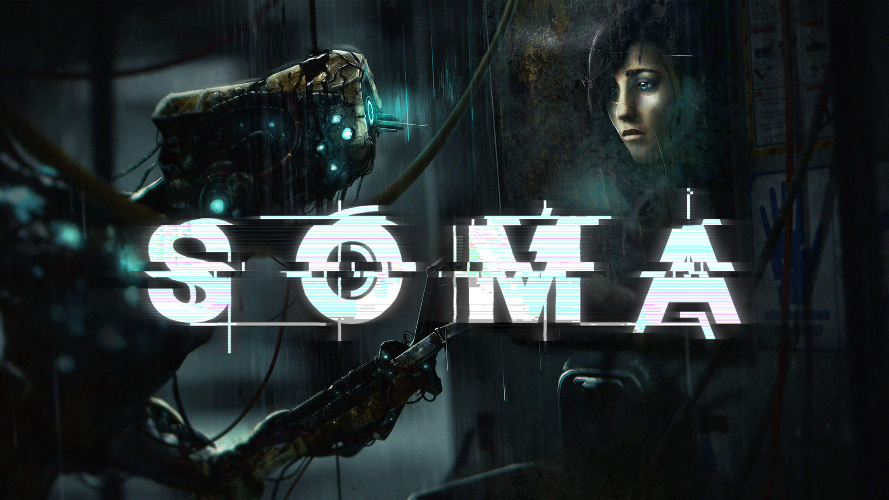

El posible guiño de Zelda: Skyward Sword a 'La que se avecina': ¿casualidad o causalidad?

Todo sobre el State of Play de Ghost of Yotei, el último gran exclusivo para PS5 en 2025

Anthem no se podrá jugar nunca más y hay una iniciativa que quiere impedir casos así

Las mejores rebajas de videojuegos para PlayStation, Switch y Xbox del Prime Day 2025

James Bond 007 First Light anuncia recompensas si se cumplen estos objetivos

El estudio que demuestra que jugar a Pokémon de niño desarrolló una zona de tu cerebro

Routine, el FPS de terror espacial, resucita por segunda vez y anuncia un estreno “cada vez más cercano”, también en Game Pass

Steam ha retirado un mod de Mount & Blade a petición de Corea del Sur, pero Valve niega esas presiones políticas

Anthem no se podrá jugar nunca más y hay una iniciativa que quiere impedir casos así

No es un error: Jedi Survivor para PS5 por 15 euros ¡y en físico!

El remake de Assassin’s Creed: Black Flag puede haberse filtrado en Steam, tras una actualización con funciones inéditas

El 24 de julio, SOMA traslada su terror submarino a Nintendo Switch, en un juego también compatible con Switch 2

Un RPG por turnos con toque noventero: Sea of Stars es una ganga en físico para Switch

Ghost of Yotei mostrará 20 minutos de gameplay en un State of Play el 10 de julio con dos veteranos de Sucker Punch